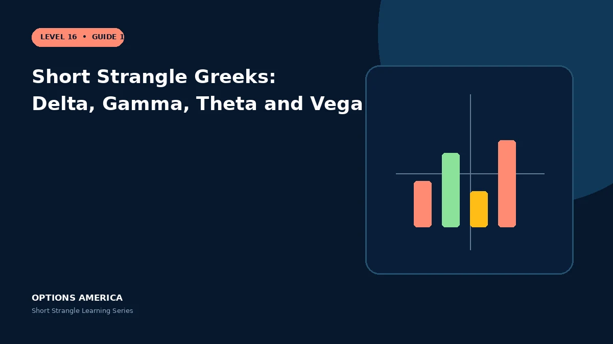

Learn how delta, negative gamma, positive theta and negative vega change as price approaches either short strike.
Delta
Call and put deltas can offset at entry. A rally makes the position increasingly short delta through the call; a decline makes it increasingly long delta through the put relative to a falling asset.
Gamma
Both short options contribute negative gamma, especially as price approaches a strike and expiration nears. Delta therefore changes in the unfavorable direction during movement.
Theta
The two options usually provide positive theta. Decay is not linear and is not guaranteed realized profit when movement or volatility overwhelms it.
Vega
Negative vega means broad IV expansion increases option value. Volatility often rises precisely when the tested leg is also developing adverse delta and gamma.
A practical example
A strangle begins delta 0.01, gamma −0.025, theta +0.06 and vega −0.17. After a decline toward the put strike, delta and gamma exposure can increase sharply.
This simplified scenario focuses on selected outcomes; live prices and risks will differ. Live option prices also reflect the underlying price, time decay, rates, dividends, liquidity and transaction costs. Greeks are theoretical estimates, not guarantees.
Build a risk-first trading plan
Before using short strangle greeks: delta, gamma, theta and vega, record the stock price, put and call strikes, expiration, total credit and contract multiplier. Calculate both breakevens, then estimate dollar loss beyond them under upside and downside gaps. A wide strike range improves the starting room but does not define either tail.
Stress several prices, time points and volatility levels, including a skew change that affects the put and call differently. Review delta, gamma, theta, vega and buying power for the complete portfolio. Multiple OTM positions can become tested together during a common market shock.
Define a profit target, maximum tolerated loss, tested-side trigger, margin reserve and latest exit date before entry. Decide whether an event is intentionally included and how assignment would be handled. Use multi-leg orders and confirm quantities after every fill, roll or partial close.
Document the result after exit, including slippage, assignment effects and the largest intraday exposure. Comparing the original forecast with the actual path helps distinguish a sound process from a lucky outcome and improves later strike, duration, margin-reserve and position-size choices under similar market conditions.
Frequently asked questions
Does low initial delta mean low risk?
No.
Why does risk accelerate?
Negative gamma changes delta against the move.
Is theta guaranteed income?
No.
Continue the Short Strangle cluster
Explore related guides: Theta and Time Decay in a Short Strangle · When to Close or Roll a Short Strangle · Short Strangle Example With Payoff Scenarios. For a structured sequence, use the free Level 16 – Short Strangle course.
Options involve risk and are not suitable for every investor. This material is educational and is not investment, tax or legal advice. Greeks are theoretical estimates, and contract terms and broker requirements can vary.